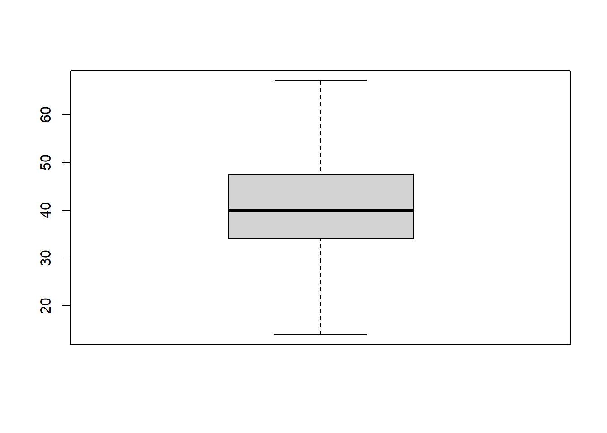
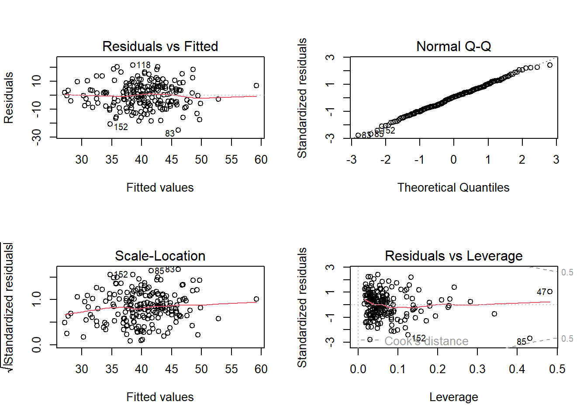
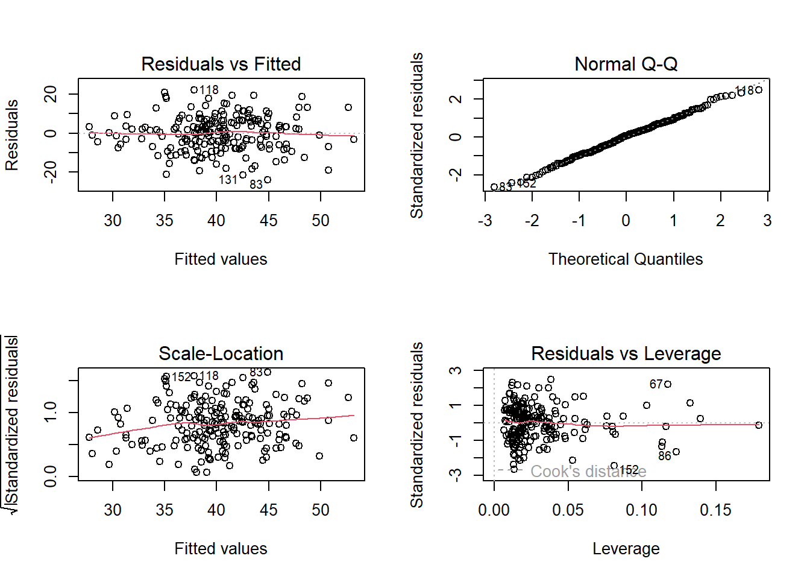

# Aus der Excel-Tabelle wurde das relevante Arbeitsblatt als csv gespeichert
ukraine <- read.delim("datasets/statistik/Ukraine_bearbeitet.csv", sep = ",")Stat3: Lösung
- Download dieses Lösungsscript via “</>Code” (oben rechts)
- Lösungstext als Download
Lösung Übung 3.1
Schon vor dem Einlesen kürzt man am besten bereits in Excel die Variablennamen so ab, dass sie noch eindeutig, aber nicht unnötig lang sind, etwa indem man die Einheiten wegstreicht
ukrainestr(ukraine)'data.frame': 199 obs. of 24 variables:
$ X : int 1 2 3 4 5 6 7 8 9 10 ...
$ PlotID : chr "UA01NW" "UA01SE" "UA02NW" "UA02SE" ...
$ Species_richness : int 44 53 48 50 53 40 46 56 30 35 ...
$ Altitude : int 179 178 188 183 162 165 153 158 192 197 ...
$ Inclination : int 24 17 27 33 7 33 30 32 25 18 ...
$ Heat_index : num -0.42 -0.3 -0.51 -0.65 -0.09 -0.42 0 -0.59 0.46 0.32 ...
$ Microrelief : num 5 2.5 2 2 3 4 16 15 5 3 ...
$ Grazing_intensity: int 0 0 0 0 0 0 1 1 0 0 ...
$ Litter : int 12 10 0 4 15 30 5 6 10 20 ...
$ Stones_and_rocks : num 0 0 0 0 0 0 40 10 0 0 ...
$ Gravel : num 0 0 0 0 0 0 0 0 0 0 ...
$ Fine_soil : num 2 5 0 7 0 0 2 5 5 2 ...
$ Sand : int 45 30 20 20 55 30 10 30 10 5 ...
$ Silt : int 40 35 60 60 10 35 60 35 60 90 ...
$ Clay : int 15 35 20 20 35 35 30 35 30 5 ...
$ pH : num 7.32 6.91 6.72 6.44 6.1 6.23 6.79 6.43 7.19 7 ...
$ Conductivity : int 90 115 126 90 73 76 163 119 151 69 ...
$ CaCO3 : num 0.0754 0.1271 0.0723 0.0771 0.0829 ...
$ N_total : num 0.14 0.17 0.24 0.26 0.29 0.2 0.34 0.29 0.18 0.2 ...
$ C_org : num 1.54 1.97 2.99 3.22 3.77 2.5 4.59 3.67 2.16 2.38 ...
$ CN_ratio : num 10.8 11.5 12.5 12.6 12.8 ...
$ Temperature : int 79 79 80 80 82 82 82 82 79 83 ...
$ Temperature_range: int 330 330 329 329 328 328 328 328 326 327 ...
$ Precipitation : int 608 608 603 603 594 594 594 594 600 586 ...summary(ukraine) X PlotID Species_richness Altitude
Min. : 1.0 Length:199 Min. :14.00 Min. : 73.0
1st Qu.: 50.5 Class :character 1st Qu.:34.00 1st Qu.:140.0
Median :100.0 Mode :character Median :40.00 Median :166.0
Mean :100.0 Mean :40.23 Mean :161.7
3rd Qu.:149.5 3rd Qu.:47.50 3rd Qu.:188.0
Max. :199.0 Max. :67.00 Max. :251.0
Inclination Heat_index Microrelief Grazing_intensity
Min. : 1.00 Min. :-0.94000 Min. : 0.000 Min. :0.0000
1st Qu.:12.00 1st Qu.:-0.15500 1st Qu.: 2.500 1st Qu.:0.0000
Median :19.00 Median : 0.01000 Median : 5.000 Median :1.0000
Mean :19.28 Mean : 0.01603 Mean : 7.126 Mean :0.9296
3rd Qu.:25.00 3rd Qu.: 0.21500 3rd Qu.: 7.000 3rd Qu.:2.0000
Max. :48.00 Max. : 0.85000 Max. :100.000 Max. :3.0000
Litter Stones_and_rocks Gravel Fine_soil
Min. : 0.00 Min. : 0.000 Min. : 0.000 Min. : 0.00
1st Qu.: 3.50 1st Qu.: 0.000 1st Qu.: 0.000 1st Qu.: 2.00
Median : 7.00 Median : 0.500 Median : 0.000 Median : 5.00
Mean :12.16 Mean : 3.994 Mean : 2.984 Mean : 7.02
3rd Qu.:13.50 3rd Qu.: 4.000 3rd Qu.: 3.000 3rd Qu.:10.00
Max. :90.00 Max. :68.000 Max. :40.000 Max. :38.00
Sand Silt Clay pH
Min. : 5.00 Min. : 5.00 Min. : 5.00 Min. :4.890
1st Qu.:20.00 1st Qu.:20.00 1st Qu.:20.00 1st Qu.:7.240
Median :30.00 Median :35.00 Median :20.00 Median :7.420
Mean :35.81 Mean :40.43 Mean :23.74 Mean :7.286
3rd Qu.:55.00 3rd Qu.:60.00 3rd Qu.:35.00 3rd Qu.:7.545
Max. :80.00 Max. :90.00 Max. :55.00 Max. :7.790
NA's :1 NA's :1 NA's :1
Conductivity CaCO3 N_total C_org
Min. : 40.0 Min. : 0.0042 Min. :0.0700 Min. : 1.040
1st Qu.:148.5 1st Qu.: 0.4306 1st Qu.:0.2000 1st Qu.: 2.850
Median :171.0 Median : 4.6578 Median :0.2700 Median : 3.560
Mean :162.3 Mean : 7.4757 Mean :0.2788 Mean : 3.689
3rd Qu.:189.5 3rd Qu.:13.0002 3rd Qu.:0.3300 3rd Qu.: 4.400
Max. :232.0 Max. :35.2992 Max. :0.9500 Max. :11.300
CN_ratio Temperature Temperature_range Precipitation
Min. : 6.04 Min. :78.00 Min. :326.0 Min. :577.0
1st Qu.:12.24 1st Qu.:82.00 1st Qu.:328.0 1st Qu.:583.0
Median :12.95 Median :84.00 Median :329.0 Median :592.0
Mean :13.48 Mean :84.82 Mean :328.6 Mean :596.4
3rd Qu.:14.02 3rd Qu.:88.00 3rd Qu.:330.0 3rd Qu.:602.5
Max. :27.42 Max. :92.00 Max. :331.0 Max. :630.0
Man erkennt, dass alle Spalten bis auf die erste mit der Plot ID numerisch (num oder int) und dass die abhängige Variable in Spalte 2 sowie die Prediktorvariablen in den Spalten 3 bis 23 stehen.
#Explorative Datenanalyse der abhängigen Variablen
boxplot(ukraine$Species_richness)
Der Boxplot sieht sehr gut symmetrisch aus. Insofern gibt es keinen Anlass über eine Transformation nachzudenken. (Da es sich bei Artenzahlen um Zähldaten handelt, müsste man theoretisch ein glm mit Poisson-Verteilung rechnen; bei einem Mittelwert, der hinreichend von Null verschieden ist (hier: ca. 40), ist eine Poisson-Verteilung aber praktisch nicht von einer Normalverteilung zu unterscheiden und wir können uns den Aufwand auch sparen).
cor <- cor(ukraine[,3:23])
cor
cor[abs(cor)<0.7] <- 0
corDie Korrelationsanalyse dient dazu, zu entscheiden, ob die Prädiktorvariablen hinreichend voneinander unabhängig sind, um alle in das globale Modell hinein zu nehmen. Bei Pearson’s Korrelationskoeffizienten r, die betragsmässig grösser als 0.7 sind, würde es problematisch. Alternativ hätten wir auch den VIF (Variance Inflation Factor) als Kriterium für den möglichen Ausschluss von Variablen aus dem globalen Modell nehmen können. Diese initiale Korrelationsanalyse zeigt uns aber, dass unsere Daten noch ein anderes Problem haben: für die drei Korngrössenfraktionen des Bodens (Sand, Silt, Clay) stehen lauter NA’s. Um herauszufinden, was das Problem ist, geben wir ein:
summary(ukraine$Sand) Min. 1st Qu. Median Mean 3rd Qu. Max. NA's
5.00 20.00 30.00 35.81 55.00 80.00 1 ukraine[!complete.cases(ukraine), ] # Zeigt zeilen mit NAs ein X PlotID Species_richness Altitude Inclination Heat_index Microrelief
85 85 UAR061 23 159 48 0.1 100
Grazing_intensity Litter Stones_and_rocks Gravel Fine_soil Sand Silt Clay
85 0 1 68 0 1 NA NA NA
pH Conductivity CaCO3 N_total C_org CN_ratio Temperature
85 7.53 203 10.9638 0.95 11.3 11.86 82
Temperature_range Precipitation
85 327 599Da gibt es offensichtlich je ein NA in jeder dieser Zeilen. Jetzt können wir entscheiden, entweder auf die drei Variablen oder auf die eine Beobachtung zu verzichten. Da wir eh schon eher mehr unabhängige Variablen haben als wir händeln können, entscheide ich pragmatisch für ersteres. Wir rechnen die Korrelation also noch einmal ohne diese drei Spalten (es sind die Nummern 12:14, wie wir aus der anfänglichen Variablenbetrachtung oben wissen).
cor <- cor(ukraine[, c(3:11, 15:23)])
cor[abs(cor)<0.7] <- 0
corWenn man auf cor nun doppel-clickt und es in einem separaten Fenster öffnet, sieht man, wo es problematische Korrelationen zwischen Variablenpaaren gibt. Es sind dies Altitude vs. Temperature und N.total vs. C.org. Wir müssen aus jedem dieser Paare jetzt eine Variable rauswerfen, am besten jene, die weniger gut interpretierbar ist. Ich entscheide mich dafür Temperature statt Altitude (weil das der direktere ökologische Wirkfaktor ist) und C.org statt N.total zu behalten (weil es in der Literatur mehr Daten zum Humusgehalt als zum N-Gehalt gibt, damit eine bessere Vergleichbarkeit erzielt wird). Die Aussagen, die wir für die beibehaltene Variable erzielen, stehen aber +/- auch für die entfernte. Das Problem ist aber, dass wir immer noch 16 Variablen haben, was einen sehr leistungsfähigen Rechner oder sehr lange Rechenzeit erfordern würde. Wir sollten also unter 15 Variablen kommen. Wir könnten uns jetzt überlegen, welche uns ökologisch am wichtigsten sind, oder ein noch strengeres Kriterium bei r verwenden, etwa 0.6
cor <- cor(ukraine[,c(3:11, 15:23)])
cor[abs(cor)<0.6] <- 0
cor Species_richness Altitude Inclination Heat_index
Species_richness 1 0.0000000 0 0
Altitude 0 1.0000000 0 0
Inclination 0 0.0000000 1 0
Heat_index 0 0.0000000 0 1
Microrelief 0 0.0000000 0 0
Grazing_intensity 0 0.0000000 0 0
Litter 0 0.0000000 0 0
Stones_and_rocks 0 0.0000000 0 0
Gravel 0 0.0000000 0 0
Clay NA NA NA NA
pH 0 0.0000000 0 0
Conductivity 0 0.0000000 0 0
CaCO3 0 0.0000000 0 0
N_total 0 0.0000000 0 0
C_org 0 0.0000000 0 0
CN_ratio 0 0.0000000 0 0
Temperature 0 -0.8309559 0 0
Temperature_range 0 -0.6794514 0 0
Microrelief Grazing_intensity Litter Stones_and_rocks Gravel
Species_richness 0 0 0 0 0
Altitude 0 0 0 0 0
Inclination 0 0 0 0 0
Heat_index 0 0 0 0 0
Microrelief 1 0 0 0 0
Grazing_intensity 0 1 0 0 0
Litter 0 0 1 0 0
Stones_and_rocks 0 0 0 1 0
Gravel 0 0 0 0 1
Clay NA NA NA NA NA
pH 0 0 0 0 0
Conductivity 0 0 0 0 0
CaCO3 0 0 0 0 0
N_total 0 0 0 0 0
C_org 0 0 0 0 0
CN_ratio 0 0 0 0 0
Temperature 0 0 0 0 0
Temperature_range 0 0 0 0 0
Clay pH Conductivity CaCO3 N_total C_org CN_ratio
Species_richness NA 0.000000 0.000000 0 0.0000000 0.0000000 0
Altitude NA 0.000000 0.000000 0 0.0000000 0.0000000 0
Inclination NA 0.000000 0.000000 0 0.0000000 0.0000000 0
Heat_index NA 0.000000 0.000000 0 0.0000000 0.0000000 0
Microrelief NA 0.000000 0.000000 0 0.0000000 0.0000000 0
Grazing_intensity NA 0.000000 0.000000 0 0.0000000 0.0000000 0
Litter NA 0.000000 0.000000 0 0.0000000 0.0000000 0
Stones_and_rocks NA 0.000000 0.000000 0 0.0000000 0.0000000 0
Gravel NA 0.000000 0.000000 0 0.0000000 0.0000000 0
Clay 1 NA NA NA NA NA NA
pH NA 1.000000 0.674678 0 0.0000000 0.0000000 0
Conductivity NA 0.674678 1.000000 0 0.0000000 0.0000000 0
CaCO3 NA 0.000000 0.000000 1 0.0000000 0.0000000 0
N_total NA 0.000000 0.000000 0 1.0000000 0.9551133 0
C_org NA 0.000000 0.000000 0 0.9551133 1.0000000 0
CN_ratio NA 0.000000 0.000000 0 0.0000000 0.0000000 1
Temperature NA 0.000000 0.000000 0 0.0000000 0.0000000 0
Temperature_range NA 0.000000 0.000000 0 0.0000000 0.0000000 0
Temperature Temperature_range
Species_richness 0.0000000 0.0000000
Altitude -0.8309559 -0.6794514
Inclination 0.0000000 0.0000000
Heat_index 0.0000000 0.0000000
Microrelief 0.0000000 0.0000000
Grazing_intensity 0.0000000 0.0000000
Litter 0.0000000 0.0000000
Stones_and_rocks 0.0000000 0.0000000
Gravel 0.0000000 0.0000000
Clay NA NA
pH 0.0000000 0.0000000
Conductivity 0.0000000 0.0000000
CaCO3 0.0000000 0.0000000
N_total 0.0000000 0.0000000
C_org 0.0000000 0.0000000
CN_ratio 0.0000000 0.0000000
Temperature 1.0000000 0.6900784
Temperature_range 0.6900784 1.0000000Entsprechend „werfen“ wir auch noch die folgenden Variablen „raus“: Temperature.range (positiv mit Temperature), Precipitation (negativ mit Temperature) sowie Conductivity (positiv mit pH).
Nun können wir das globale Modell definieren, indem wir alle verbleibenden Variablen aufnehmen, das sind 13. (Wenn das nicht eh schon so viele wären, dass es uns an die Grenze der Rechenleistung bringt, hätten wir auch noch darüber nachdenken können, einzelne quadratische Terme oder Interaktionsterme zu berücksichtigen).
global.model <- lm(Species_richness ~ Inclination + Heat_index + Microrelief + Grazing_intensity +
Litter + Stones_and_rocks + Gravel + Fine_soil + pH + CaCO3 + C_org + CN_ratio + Temperature, data = ukraine)Nun gibt es im Prinzip zwei Möglichkeiten, vom globalen (vollen) Modell zu einem minimal adäquaten Modell zu kommen. (1) Der Ansatz der „frequentist statistic“, in dem man aus dem vollen Modell so lange schrittweise Variablen entfernt, bis nur noch signifikante Variablen verbleiben. (2) Den informationstheoretischen Ansatz, bei dem alle denkbaren Modelle berechnet und verglichen werden (also alle möglichen Kombinationen von 13,12,…, 1, 0 Parametern). Diese Lösung stelle ich im Folgenden vor:
# Multimodel inference
if(!require(MuMIn)){install.packages("MuMIn")}
library(MuMIn)
options(na.action = "na.fail")
allmodels <- dredge(global.model)allmodelsJetzt bekommen wir die besten der insgesamt 8192 möglichen Modelle gelistet mit ihren Parameterschätzungen und ihrem AICc.
Das beste Modell umfasst 5 Parameter (CaCO3, CN.ratio, Grazing.intensity. Heat.index, Litter). Allerdings ist das nächstbeste Modell (mit 6 Parametern) nur wenig schlechter (delta AICc = 0.71), was sich in fast gleichen (und zudem sehr niedrigen) Akaike weights bemerkbar macht. Nach dem Verständnis des Information theoretician approach, sollte man in einer solchen Situation nicht das eine „beste“ Modell benennen, sondern eine Aussage über die Gruppe der insgesamt brauchbaren Modelle treffen. Hierzu kann man (a) Importance der Parameter über alle Modelle hinweg berechnen (= Summe der Akaike weights aller Modelle, die den betreffenden Parameter enthalten) und/oder (b) ein nach Akaike weights gemitteltes Modell berechnen.
# Importance values der Variablen
sw(allmodels) Heat_index Litter CaCO3 CN_ratio Grazing_intensity
Sum of weights: 1.00 0.92 0.82 0.73 0.68
N containing models: 4096 4096 4096 4096 4096
Stones_and_rocks Temperature Microrelief Gravel Fine_soil
Sum of weights: 0.43 0.39 0.33 0.31 0.31
N containing models: 4096 4096 4096 4096 4096
C_org pH Inclination
Sum of weights: 0.30 0.26 0.26
N containing models: 4096 4096 4096 Demnach ist Heat.index die wichtigste Variable (in 100% aller relevanten Modelle), während ferner Litter, CaCO3, CN_ratio und Grazing_intensity in mehr als 50% der relevanten Modelle enthalten sind.
# Modelaveraging (Achtung: dauert mit 13 Variablen einige Minuten)
summary(model.avg(allmodels, rank = "AICc"), subset = TRUE)Aus dem gemittelten Modell können wir die Richtung der Beziehung (positiv oder negativ) und ggf. die Effektgrössen (wie verändert sich die Artenzahl, wenn die Prädiktorvariable um eine Einheit zunimmt?) ermitteln.
# Modelldiagnostik nicht vergessen
par(mfrow = c(2, 2))
plot(global.model)
plot(lm(Species_richness ~ Heat_index + Litter + CaCO3 + CN_ratio + Grazing_intensity, data = ukraine))
summary(global.model)
Call:
lm(formula = Species_richness ~ Inclination + Heat_index + Microrelief +
Grazing_intensity + Litter + Stones_and_rocks + Gravel +
Fine_soil + pH + CaCO3 + C_org + CN_ratio + Temperature,
data = ukraine)
Residuals:
Min 1Q Median 3Q Max
-25.1317 -5.8226 0.5007 5.9982 21.4941
Coefficients:
Estimate Std. Error t value Pr(>|t|)
(Intercept) 29.35672 17.93590 1.637 0.10338
Inclination 0.01179 0.08581 0.137 0.89084
Heat_index -12.17483 2.41802 -5.035 1.13e-06 ***
Microrelief 0.07488 0.07312 1.024 0.30716
Grazing_intensity 1.23000 0.67730 1.816 0.07098 .
Litter -0.12338 0.04309 -2.864 0.00467 **
Stones_and_rocks -0.14803 0.08840 -1.675 0.09570 .
Gravel -0.03114 0.12924 -0.241 0.80988
Fine_soil -0.08720 0.10181 -0.856 0.39286
pH -0.21774 1.70826 -0.127 0.89871
CaCO3 0.22638 0.10597 2.136 0.03397 *
C_org 0.31994 0.55929 0.572 0.56798
CN_ratio -0.75167 0.33393 -2.251 0.02556 *
Temperature 0.24527 0.21510 1.140 0.25566
---
Signif. codes: 0 '***' 0.001 '**' 0.01 '*' 0.05 '.' 0.1 ' ' 1
Residual standard error: 9.149 on 185 degrees of freedom
Multiple R-squared: 0.2349, Adjusted R-squared: 0.1812
F-statistic: 4.37 on 13 and 185 DF, p-value: 2.027e-06Wie immer kommt am Ende die Modelldiagnostik. Wir können uns entweder das globale Modell oder das Modell mit den 5 Variablen mit importance > 50% anschauen. Das Bild sieht fast identisch aus und zeigt keinerlei problematische Abweichungen, d. h. links oben weder ein Keil, noch eine Banane, rechts oben eine nahezu perfekte Gerade.